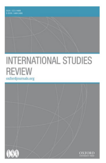

收录于合集

作品简介
【作者】 Rosemary Foot是牛津大学国际关系高级研究员，圣安东尼学院名誉研究员；Evelyn Goh是澳大利亚国立大学战略政策研究教授
【 编译】 刘金晶（国政学人编译员，外交学院国际关系研究所）
【校对】 袁蕙珈
【审核 】 姚寰宇
【排版】 柯晗燕
【 来源 】 Foot, R., & Goh, E. (2019). The International Relations of East Asia: A New Research Prospectus. International Studies Review, 21 (3), 398-423
期刊介绍

《国际研究评论》创刊于1957年，该期刊由牛津大学出版社代表国际研究协会出版的同行评审学术期刊，以季刊形式发行。2018年影响因子为2.076.
东亚国际关系：一种新的研究前景
The International Relations of East Asia: A New Research Prospectus
文章导读
一、 导论 ****
东亚因其经济活力、日益增长的影响力、中国对美国区域及全球霸权的挑战，以及其他诸如朝鲜半岛问题这样的冲突热点，成为了一个对全球秩序具有重要意义的地区。对于这一地区的学术分析，既需要重视该地区固有的微妙之处，也需要将这种微妙之处与更广泛的国际体系背景联系起来。许多学者的分析已表明东亚的国际关系是富有挑战性的，主要体现在该地区内的经济日益相互依赖，但安全局势高度紧张。 本文认为东亚国际关系具有三点核心特征： 二元性（ Duality **）、混杂性 (**Hybridity **) 与偶然性(**Contingency ) ，简称为DHC。 基于这一认识，本文提出一种创新性研究框架 **—— 衔接分析框架（**Conjunctions Analytical Framework **） ,在区域-全球与单元- 系统层次的衔接中着力，从内容（**content ）、边界（ boundaries ）和变化（ change ）三个方面讨论东亚的国际关系。
本文分为五个部分。第一部分是导论部分，即本部分。第二部分详细介绍东亚国际关系的三个特征：二元性、混杂性与偶然性。第三部分正式提出并阐释衔接分析框架。接下来的两个部分则分别具体解释区域- 全球与单元- 系统层次中的衔接处。第四部分着重于该地区与全球秩序相关的系统性动态分析，指出东亚研究的重要性在于，东亚作为一个与全球制度和进程深度互动的地区，其区域动态有可能影响全球结果。第五部分则着重于分析单元- 系统层面衔接处国家和非国家行为体的政策选择。
为更深入了解这这一复杂区域，本文致力于揭示足够多的关键性衔接和进程，找寻阐释东亚地区DHC特征的分析方法。本文提出问题，开展研究，重新定义研究议程，让许多人带着各种研究方法进入该领域的研究，以解释当前的东亚现状。本文的目标是塑造未来东亚国际关系的研究，并为分析东亚地区和全球政治的复杂现实提供更有效的方法。
****二 、 东亚区域性特征：二元性、混杂性与偶然性 **** ****
东亚当前具有对立力量共存 (二元性)、混合动力作用(混杂性)和结果不确定(偶然性)三大特点。 二元性指的是东亚地区存在明显的对立力量。 该地区最显著的特征是随着经济一体化程度不断提高，但安全紧张局势也日益加剧。这一地区拥有全球最大的生产流程份额和贸易网络，但这一相互依赖关系建立在对立的政治关系的基础上，如中日对立。以中国为首的区域性国家的军费支出近年来已经超过了世界其他大部分地区，但其依旧坚持经济效益优先的“综合”安全理念，凸显“非传统性”，强调合作安全。而且，20年的高度制度化促进了区域化，削弱了行为体的主权性。 二元性使政策选择和最终结果变得混杂。 它将明显分离的模型、期望或实践等元素组合起来，导致难以被归类。这一混杂性反映中国的有限能力。中国难以在东亚地区提出一个可取代美国领导的轴辐体系或东盟领导的政经制度的机制架构。相反在东亚的经济和安全领域内，充斥着各种“本土的”、“西方的”和“全球的”规范、制度与实践，不具有向新秩序转变的明确标志。混杂性也体现在大多数东亚国家的战略选择上。在冷战后，东亚国家避开直接制衡或追随中国或者美国,选择了“软平衡”,“对冲”等策略,将非直接遏制方式与积极参与相结合。 二元性与混杂性增加了东亚地区的不可预测性。 在系统层面，区域内秩序不会因权力分配变化而变化，反而更会沿着非线性轨道或后退或前进，或者因意外事件而偏离。在制定决策过程中，偶然性主要体现在政策制定者的决策方式上，其不采取强硬立场下定论，而选择不排除未来选择的渐进式方式。决策者需要进行正和博弈和零和博弈，众多出台的政策都用于解决日常的不确定性，而先进行哪一种博弈则决定于决策者的优先级取向。这正是看似令人满意的政策的偶然性原因。作者认为其他地区和作为整体的全球体系同样具有上述三重性质。但本文的重点分析对象是东亚地区，且这一地区正处于重要的战略转型阶段：大国相互竞争，深度参与全球经济相互依赖网络。这三点特征不是作为单个元素运行的，而是相辅相成产生作用的。
三、 衔接分析框架
当前东亚地区国际关系研究面临着三大主要障碍。首先，我们需要确定不同的特征、制度和代理人，以及在这种混合的区域秩序中作用的行为体的所有选项。这就需要可以解释复杂经验细节和过程的非必要性方法（non- essentializing approaches）。因此，国际关系学者需要特别关注代理机构和社会背景，以解释看似二元或混合的选择和趋势，这些并不完全符合抽象的理论范畴，但可能反映了特定区域的理解、联盟、竞争或权衡行为。其次，我们需要关注区域内二元张力或对立动态的研究框架。当涉及问题更为宽泛时，这一框架既能阐述其概念，又能分析其进程。也就是说，这些问题的回答不仅揭示了“微观层面”的过程、社会环境与互动，而且可以将这些动态与更广泛的系统环境联系起来。因此，在思考国际秩序时，必须将“社会”与“系统”和“个人主观”分离对比。最后，要研究一个以DHC为特征的地区，就必须抛弃那些通常集中于二分法的典型国际关系研究方法中常见的简单分类，比如把一个地区描述成主要是冲突或合作的地区，或者在解释中突出安全或经济因素。在本体论上，DHC特征不是固定的类别和过程，而是流动的与充满偶然性的。因此，IR学者需要探索不同社会形态相互作用时的“灰色地带”，而不是强加不同的类别。
为解决上述挑战，国际关系学界进行社会转向， 本文创造性提出针对东亚 DHC 特征的 “衔接分析框架”。 这一框架着眼于两大衔接处的分析，即区域 - 全球之间与单元-系统之间。 为探讨东亚地区国际关系的性质与意义，本文从三大点切入：内容，边界与变化。表一概述地区 - 全球和单元-系统连接的概念化 操 作，提出东亚国际关系未来研究领域的主要切入点： 内容、边界和变化。 下表显示的是这三个切入点在不同的层次上所代表的具体内容：
表1 研究前景的可操作视图
**
**
切入点
|
两大层次的衔接处
—|—
地区 -全球层次
|
单元 -系统层次
1 、内容
|
共有社会观念、基本制度与秩序特征
|
参与决策联盟和在单位上进行选择的关键行为体
2 、边界
|
东亚历史秩序的边界；
历史上的东亚与当代东亚国际社会之间；
以及东亚与全球国际社会之间的联系；
|
共有区域性基本制度上，各单元政策选择的外部边界；
国内与国际、经济与安全决策之间的模糊边界；
3 、变化
|
体系性变化：从基本的构成性转变→规范性转变→渐进式转换
|
单元选择与区域秩序的联系：国内联盟决策时的关键点与进化
四、 衔接分析法 ****
（一）地 区 -全球层次分析：全球秩序与地区转移
介于区域与全球之间的灰色地带是研究东亚地区国际关系的一种有前景的研究方法。 当前，将整个东亚地区作为研究对象的国际关系学者寥寥无几。但整体大于各部分之和，东亚的经济与政治与全球结构、地区秩序紧密相连，不能与国际动态脱离。为了探索区域和国际秩序与过程之间的交汇处，国际关系学者可以使用更加宽泛的概念。
1、 地区性国际社会的概念
本文所指的国际社会内容，主要分为两类：一类是稳固社会的秩序原则和社会共有观念，另一类是这个社会产生秩序的本质。为进一步研究东亚地区在地区- 全球连接处层面的体系变化，首先需要了解的是东亚地区在社会结构的内容和具体实践互动方面的独特之处以及其与全球社会结构和具体实践的关系。因此，本文建议在适应和传播规范取得一定成果的基础上，推进对东亚地区规范如何颠覆、挑战或帮助改变全球趋势的进一步研究。
2、 区域秩序的边界
社会边界，或社会群体之间的分化和相互作用，是国际社会不可避免的结构性状况。东亚国际社会的多样化和混合性内容使确定该地区边界的努力复杂化。与此同时，当代国际社会的全球化程度参差不齐，全球主义推动分裂化几乎与一体化一样多。其结果是各种不同的社会实践，不均衡扩散和跨越现有社会边界的适应度之间的冲突，进而产生了混合秩序。。
我们如何平衡多层次的混合性与紧张度，有效地区分东亚、其他地区和全球秩序之间的边界？比较系统研究提出了三条途径。第一条是跨时间的区域内部比较：鉴于东亚的长期历史演变，解释东亚最近秩序为何是二元和混合的重要部分可能存在于该地区深厚而丰富的历史经验中。第二条是这些历史社会结构与当代东亚社会结构之间的边界和关系。第三条是进一步探讨地区秩序和全球社会秩序之间的边界，尤其是随着中国的崛起，东亚地区日益成为国际体系的核心区域。
3 、 体系性变化：转型与过渡
国际关系学术研究中的一个主要缺点是考虑体系变化的能力有限。很容易忽略国际社会主要机制中发生的更深层次变化与产生重大系体系变革的更深层次的社会演变场所。温特认为国际结构会进入一个新逻辑，这种"新逻辑"表现为体系的转变——构成国际社会身份和角色的基本共识产生重大变化，以至于国际秩序本身的性质也发生了变化。为了探寻东亚地区的体系性变化，本文认为可以从三方面着手：第一，东亚国际社会九个世纪演变的许多重要主题和经验案例仍未进行详细讨论，而进一步研究东亚国际关系的历史演变会有助于增进我们对东亚国际关系的认识。第二，分析区域秩序变化的一个方法是确定体系内的关键筹码，并追踪它们是如何被打击、衰退、分解或被背弃的，造成该地区不稳定与冲突，第三，体系转型即可在共识中平稳过渡，也会在暴力冲突等社会分裂时产生。
（二） 单元 -系统分析层次：行为体，选择与 临界点
本节重点从单位- 系统层次的衔接处进行分析，探讨DHC特征的区域中，私人或公共决策者所面临的深层次困境。本文认为，这些困境定义了该地区，并有助于解释正和和零和博弈中的行为选择，即“对冲”（Hedging）。再次回归内容、边界和变化的讨论框架，但各部分所代表的含义发生了变化。 边界是指单元层面上选择的外部限制和共有秩序原则；内容是指参照这些原则运作的主要行为者和单位；变化是指将决策联盟成为足以影响区域 -全球秩序转变的 临界点
1、 决策的边界
三个原因可以用来阐释东亚地区共有秩序原则的重要性。首先，规定决策者政策选择的外部限制；其次，揭示了划分分析类别的缺陷；最后，说明了将国内外分离原则的无效性。其中，最重要的概念是：（1）安全概念，包括与经济生活方式（简而言之，经济- 安全关系）的直接构成关系；（2）国家自治和主权平等，以及国家作为特权和权威的指导机制（即国家中心主义）的思想。这两个原则有时相互配合相，有时走向对立，这也反映了区域秩序中固有的二元性。
2、 经济 -安全关系
自1945年以来，政权安全和综合安全是东亚地区安全的主导形势。政权安全是指增强决策精英在执政期间执政能力的相关决定。综合安全则含义更为全面，注重经济发展与安全的相互关联以及非传统安全带来的挑战，是本文“安全”所指。这一相互关系体现在：一方面，经济实力易转化为军事能力，引发安全困境。经济高度相互依存也易导致双边关系中的脆弱性。另一方面，相互依赖的国家会因高昂的战争代价反促国际和平。东亚已成为全球经济中最具活力的部分，并包含世界上几个重要的经济体，经济高度相互依赖，但安全局势依然紧张。这要求我们进一步探讨在这二元紧张环境中，做出维持"平衡"决定的感知和其实际持久性。另外，了解国内不同群体之间的安全与主要区域经济发展形式之间的联系也很有必要。综上，为更充分地了解经济和安全领域与改变这种关系构成性质能力之间的关系，东亚区域还需要做更多的比较型工作。
3、 国家中心主义
国家中心主义是主导的秩序原则之一，在确定决策的外部界限发挥重要作用。它是外国直接投资流的守护者和看门人，也是区域内组织化的设计者，强大的国家不仅能在经济相互依赖的经济体中挑起紧张态势，还会带来对领土主张的强烈要求，尤其是在领土内资源丰富的情况下。这样的主张反过来可能会增强该区域的民族主义情绪。而东亚的民族主义是一股强大的力量，有能力引发国内社会动荡和国家之间的冲突。所以，我们需要知道，在何种情况下，政府会选择或感到有义务将冲突置于合作之上，将专制置于一体化之上，寻求超越民族主义得失的方式。
所以，在东亚地区，经济- 安全关系与国家中心主义原则等共有的秩序原则以指示性而不是完全发展性的形式或复杂或密集地联系在一起。它们可以相互组合或竞争，以反映区域秩序中的混杂性和二元性。但这些动态为预测特定的决策路径带来了困难，因为结果很可能是非线性的。它们还促使我们考虑，即那些可能促使决策者做出更明确战略选择的条件。接下来，我们将讨论从共享原则到实际决策制定的最佳方法，以便更深入地了解东亚精英应对DHC的偶然方式。
4、 代理内容：行为体与政策选择
传统上，可以通过外交政策分析(FPA)或决策模型确定关键行为体并作出相应决策。FPA研究“倾向于通过多层次的特定因素分析来解释政府的外交决策”。国内的政治情况和决策制定过程也需要被纳入考虑范围之中。
当前外交政策分析面临三大挑战：如何在众多行为体中挑选出主导者，并可制定连贯的政策；如何将主导行为体对体系结构的解释与其所处体系结构相联系；以及如何处理受到内外环境影响的决策过程。所以，当前跨层次的理论整合仍然是一个关键问题。一些学者已经明确提出了有针对性的解释方法，专门研究东亚的国际关系学者也同样在寻找打破内外鸿沟的方法，比如阿查亚（Acharya）对亚洲地区地域主义规范本土化的研究和索林根（Solingen）提出的三种联盟类型。这些有价值的观点可以通过三种主要方式得到进一步发展。首先，需要明确哪些证据可用来显示决策路径和缩小选择范围。第二，该方法可运用至次国家层面和统治精英之下。第三，通过关注对策联盟是如何形成的，它们有多稳定，以及它们的成员资格在什么时候以及在什么条件下可能发生变化，可以从更动态的角度关注决策联盟。
对该地区的进一步实证研究可以探讨特定联盟在何种情况下选择了这种决策路线而不是另一种，或者说采取一种渐进的、对冲的与令人满意的战略。鉴于我们对混合区域秩序的更深后果的关注，我们可以研究一下，在何种情况下，东亚的政治角色可能会转向威斯特伐利亚体系下多元主义、走向碎片化与孤立化，而不是坚持全球化和一体化。
5、 变化： 作为 临界点（ Tipping Points ） 的选择
本小节为上述疑问找到了解决路径，主要阐述决策边界和内容思想在体系变化层面上作用的方式。在绘制单位和系统各级之间的关系时，我们需要知道，特定的国内机构和社会部门在多大程度上掌握了决策过程；这种掌控有什么概念上、资源上和政策上的含义；最重要的是，这种掌控是如何影响区域/全球秩序的?首先，当联盟面对事关经济和政治生存威胁时，其由两种截然不同的选择。第一种是寻求强制性的政治权力以维持对国内的控制。第二种是寻求新的合作伙伴，以提高执政联盟的合法性。
我们认为，在一个混合和二元的地区，决策往往是一个适应多向趋势的连续过程。在东亚典型的不透明的决策环境中，获取所需质量的信息无疑具有挑战性，但并非不可克服。一个重要的初步步骤应该是在理论框架下运作，以显示经济和安全领域以及区域和国际领域的相互渗透的性质。在东亚秩序转型时期,我们也需要适应国内、区域内、甚至全球内已经展现的变化，并评估它们在多大程度上导致共有秩序原则、决策联盟的调整，或在多大程度上代表决策的渐进式调整，所以，这是一个不确定的结果。
五、 结 论
为更好地阐释东亚的二元性、混在性和偶然性，本文运用新的研究路径——在地区-全球层次和单元-系统层次的衔接处进行研究讨论，以研究当前东亚反趋势发展。 本文希望研究重心从特权秩序过渡（ privilege order transition ）转至支持这样一种理解： 即在当代混合和二元性世界中，地区和国际秩序中的局部过渡可能更为普遍。东亚不仅可以提供重要案例以帮助检验替代理论的有效性，甚至也可以为新国际关系理论的出台提供事实依据。可以 推断 ，本文描述的东亚紧张态势无法得到解决，但这从另一方面倒逼东亚国际关系学者寻找创新而有效的方法分析全球秩序转变 ，而 这无疑已经开始。
** 本文由国政学人独家编译推荐，文章观点不代表本平台观点，转载请联系授权。**

点“在看”给我一朵小黄花